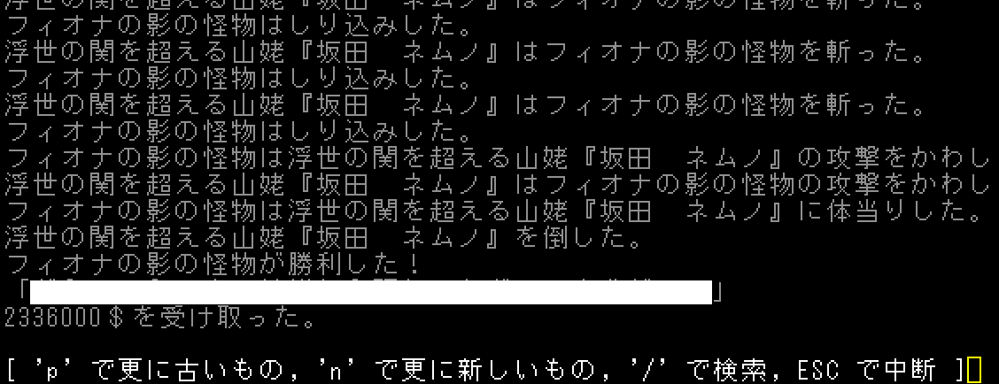

(↑河童の特殊セリフを塗りつぶし)
2023/12/13更新
神社の賭け試合で億万長者になろう(幻想蛮怒編)
Roguelike Advent Calendar 2023の22日目の記事です。
幻想蛮怒の神社の賭け試合で荒稼ぎしよう！という内容になります。
前回の記事は
モンスター闘技場で億万長者になろうです。
神社の賭け試合のシステム
wikiにとても詳しい解説があるので詳細はそちらを参照してください。
簡単に言うとオッズはモンスターの攻撃力依存です。変愚蛮怒の闘技場との違いは、1vs1がある、チーム戦がある、そしてオッズが跳ねやすい(x100以上もある)、掛け金が一口1000$、300ターンごとに開催ということです。
賭け方
残念ながら、毎試合頭の中でシミュレートする必要があります。しかし、賭け額とオッズが大きいため、効率化せずに賭けても炭鉱夫よりましな稼ぎになります。
また、1vs1なら試合展開がかなり読みやすく、オッズが高めのモンスターもちらほらいるので、それに賭けるのが盤石です。
実用に向けてセットアップ
変愚蛮怒と違い、勝てる試合に賭け続けるのではなく、大穴狙いもした方が長期的には儲かります。また、300ターンごとに開催されることやカード売人職やスコアの関係で時間をかけたくないので、ほぼ毎試合賭けることになります。
▼試合終了後300ターン待機して話しかける(メッセージスキップONの場合)
A:\e\e\e<\eR300\r\e>\e5g
P:\[KP_Subtract]
このマクロを使用することで、爆速で試合消化できます。
次に、更に判断時間を短縮するためにlvを1に…と言いたいところですが、賭け額や敵の種類もそう変わらないことから、lvを制限する必要性は薄いです。
賭けるモンスターは、
雲山・魔理沙・久侘歌などが強力です。
大穴狙いでチュパカブラ・潤美なども儲かりやすいです。
また、1vs1では耐性の有無などが分かりやすく、チーム戦では頻出する組み合わせを覚えておけば予想しやすいです。
分かりやすい組み合わせ紹介
まず、チーム戦の場合、メンバー固定チームは勝率がなんとなく分かります。『永遠亭』＞『ドールズウォー』＞『地霊殿の物言わぬ住人』＞『河童労働組合』＞『どう見ても狸が化けている』＞『サバイバルゲーム』＞『悪魔の家の裏方』＞『猫の棲む里』
ざっくりですが、こんな感じです。逆転も多いのでオッズを見て賭けましょう。『ドールズウォー』『禁呪の詠唱チーム』『ダブルスポイラー』『永遠亭』『幽霊楽団』あたりは強さの割にオッズが低めです。
次に1vs1の場合、どちらかの混乱・朦朧打撃が通るなら予想は容易です。また、lv30魔理沙>雲山>久侘歌>lv30霊夢＞美鈴などの大体の強さ関係を覚えれば予想しやすいですが、これもたまに逆転が起こります。頻出する大妖精vs○○は○○が逆転勝ちしやすいですが、大妖精の気分次第です。
勝ちやすいモンスター紹介
| モンスター |
強さの絶対評価 |
強さの相対評価 |
備考 |
| 雲山 |
A |
A |
豊富な耐性に高いACでほぼ無敵です。オッズ的に格上でも久侘歌・lv30霊夢・美鈴・あうんあたりなら高確率で勝てます。 |
| 久侘歌 |
A |
A |
殴りあいがとても強い上、朦朧打撃を持っています。朦朧耐性がある相手でも勝てます。 |
| UMAチュパカブラ |
C |
C |
オッズがとても高くなりがちです。見つけたらできる限り多めに賭けましょう。 |
| 牛崎 潤美 |
C |
C |
チュパカブラほどではないですが、オッズの割に強力です。 |
| 文・はたて |
S |
S |
テレポで逃げ回るので乱戦を回避でき、オッズの割に強力です。
特にチーム「ダブルスポイラー」は脳死で賭けても問題ないほどです。 |
| アリス・パチュリー・魔理沙 |
A |
A |
シンプルに強力です。アリスは「ドールズウォー」で頻繁に出てきます。 |
| 妖怪狸・ばんき |
C |
D |
混乱打撃持ちです。これに限らず混乱・朦朧耐性を把握していると有利です。 |
賭け試合スカムを取り入れたチャート
盗賊クエ→マゴット→チュパカブラ→神社などで、初っ端から博打に入り浸ることができます。
どのくらいの日数でどれだけ儲かるかは、大穴のチュパカブラなどを当てられるか次第なのですが、カード売人職の場合、箱の価格は10万で止まるので、日数を気にしなければ死亡リスクを負わずにカードを集められます。
また、3日目くらいまでは箱の価格は2万以下に落ち着くため、これまでに大穴を当てれば気持ちよくなれます。ただ、ランク4カードはなかなか数がそろわないため
不死鳥の尾を9枚欲しいとかであれば、ある程度の日数経過を受け入れてカード交換なども使って集めないと厳しいです。
参考dump
山城 たかねlv29.txt
終わりに
幻想蛮怒では毎試合勝敗を予想する必要があり、作業感があまりありません。売人でカードコンプして気持ちよくなりたいんだ！という方にオススメです。
次回の記事は
クローン地獄の考察です。